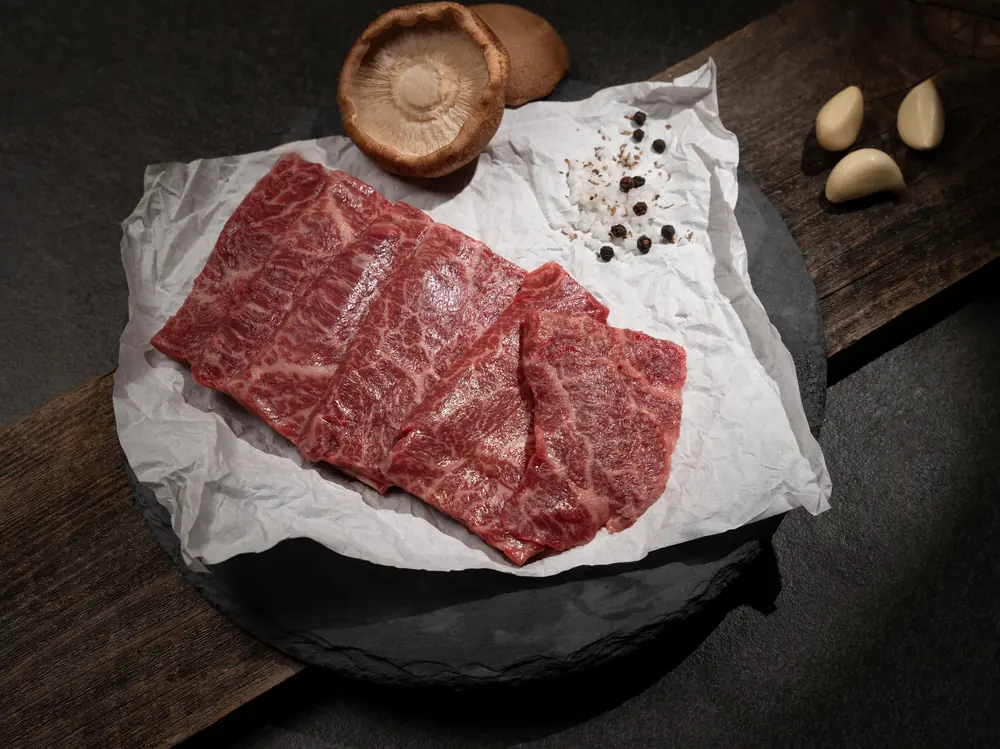
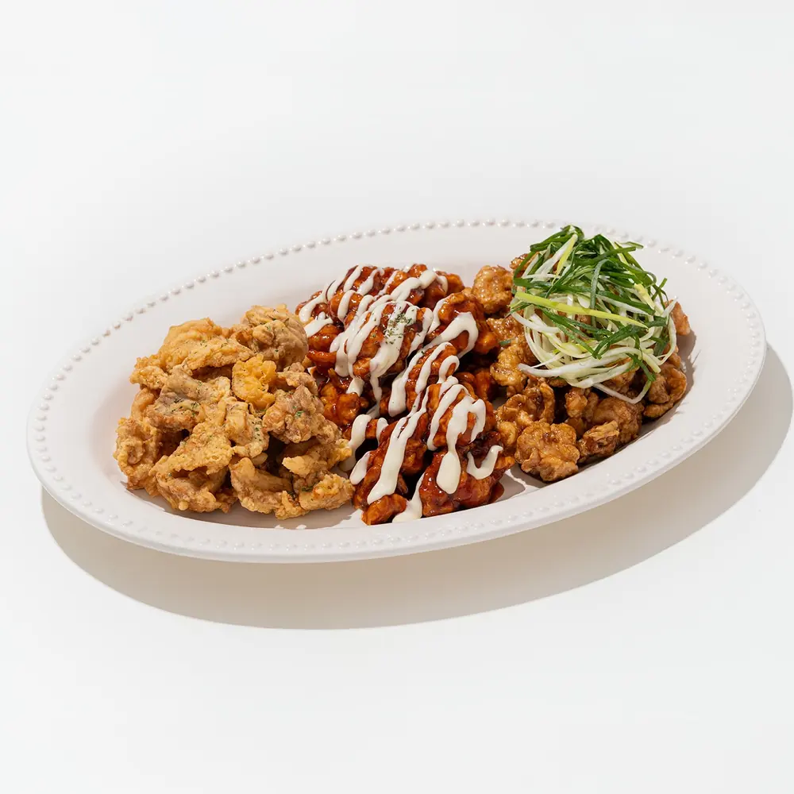
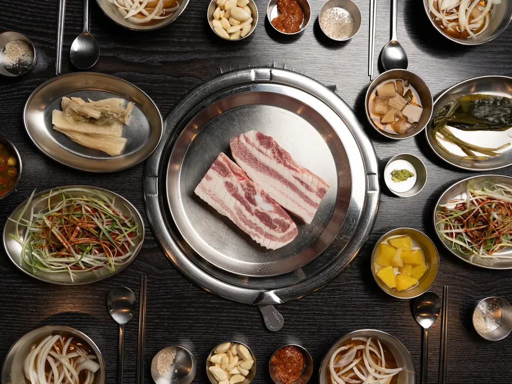
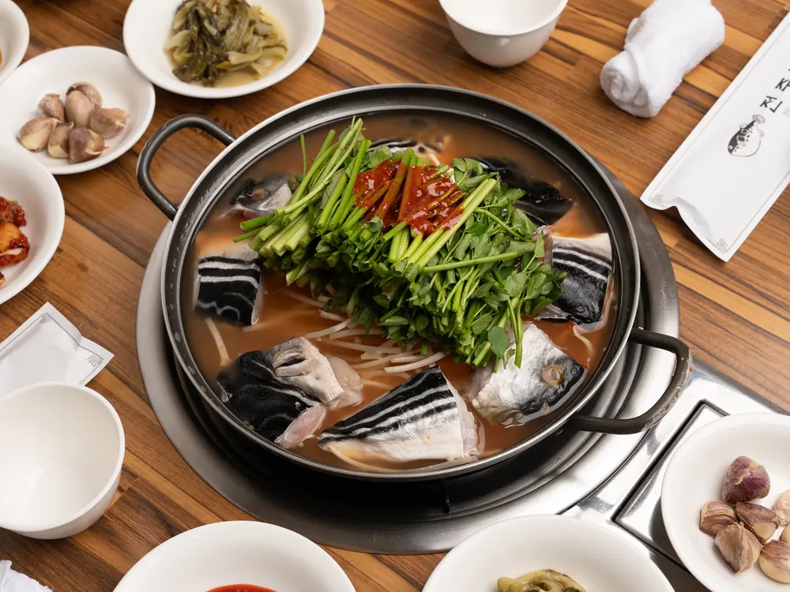
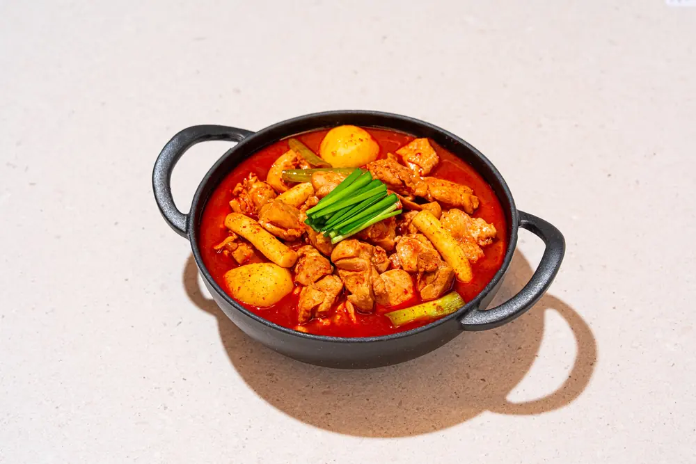
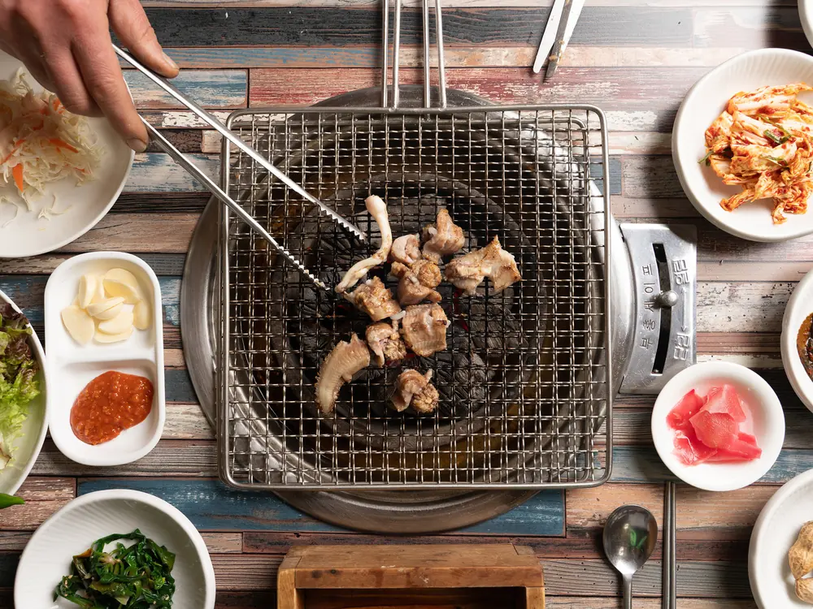

메뉴 사진
대표 메뉴를 최대 5종까지 촬영합니다.
Food Photo Package
푸드 촬영 패키지 30만 원부터
배달앱·네이버 플레이스·SNS에 바로 쓰는 메뉴와 매장 사진을 촬영합니다
Package
대표 메뉴를 최대 5종까지 촬영합니다.
매장 안팎과 테이블 분위기를 함께 담습니다.
플레이스·SNS용으로 촬영합니다.
Result






Review
메뉴가 많고 사진 분위기가 제각각이라 정리가 어려웠습니다. 치킨 메뉴를 한 번에 촬영해 톤을 맞춘 뒤 네이버 플레이스에 올렸고, 예약 반응도 이전보다 좋아졌습니다.
직접 촬영한 사진만으로는 떡의 색감과 식감을 제대로 보여주기 어려웠습니다. 촬영 후 제품이 더 돋보였고, 인스타그램에서 좋은 반응을 얻어 이후 팝업을 준비하는 데도 사진이 큰 도움이 됐습니다.
오픈을 앞두고 걱정이 많았는데, 음료와 카페 메뉴를 촬영한 이미지가 매장의 첫인상을 잘 보여줬습니다. 예쁜 비주얼 덕분에 오픈 초기에 매장을 알리고 자리 잡는 데도 큰 도움이 됐습니다.
실제 촬영 사례를 바탕으로 내용을 정리했습니다.
Recommended For
Quick Check
보통 1~2시간 내외
메뉴·매장·홍보용 사진
기본 보정본 10컷 기준
배달앱·플레이스·SNS
Price & Inquiry
기본 패키지는 대표 메뉴 최대 5종과 최종 보정본 10컷 기준으로 구성됩니다. 메뉴 수와 추가 촬영 범위에 따라 금액은 달라질 수 있습니다. 가게 위치와 촬영할 메뉴 수를 보내주시면 필요한 구성을 안내해드립니다.
카톡으로 촬영 문의